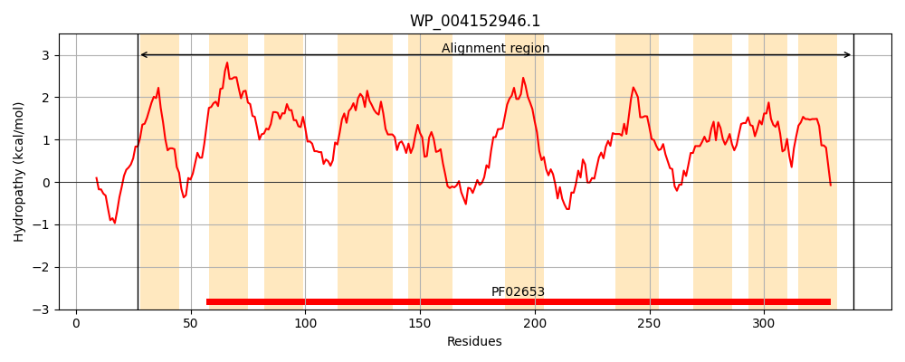
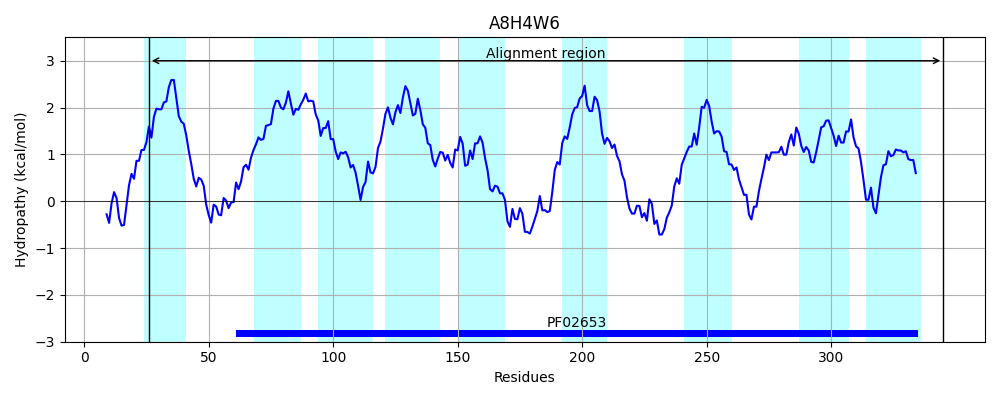
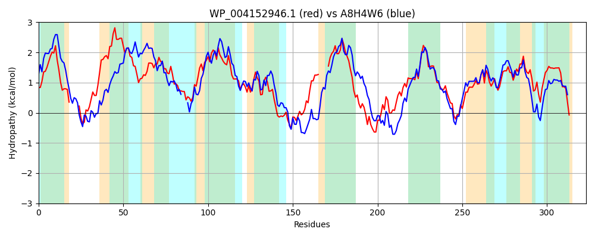

Hit Accession: A8H4W6
Hit TCID: 3.A.1.2.15
Hit Description: gnl|BL_ORD_ID|802 gnl|TC-DB|A8H4W6|3.A.1.2.15 Monosaccharide-transporting ATPase OS=Shewanella pealeana (strain ATCC 700345 / ANG-SQ1) GN=Spea_2283 PE=4 SV=1
Mach Len: 323
e:0.000000
Query TMS Count : 10
Hit TMS Count: 9
TMS-Overlap Score: 6.400000
Predicted Substrates:CHEBI:10078;xylitol
BLAST Alignment:
Score: 648 , Bit scores: 254 bits, E-value: 1.1e-82, Alignment length: 323, Percentage identity: 42
Query: 27 GIFVVMLVIALTFEIAGWY-----VRDQSFLLNTNRLVLIVLQVAIIGIIAVGVTQVIITTGIDLSSGSVIALAAVVAASLAQTSDSLSPMFPALVNLPAVIPICAGIGVGLLCGLTNGFLVTRTGIPPFIATLGMMVSARGLAQYYTQGNPISFLSDSFTAIGQG-----AMPVIIFFVIAAVFHIALKHTRYGKYVYAIGGNMTSAKVSGINVNKYLVIVYTIAGALSGLAGVVLAARVSSGQSSMGMSYELDAIAAAVIGGSSLMGGVGRITGTLIGAMILGLIKSGFTFVGVDAYVQDIIKGIIIVAAVTIDMRRNRKK 339
GI + L I T + G + D ++ L L+ ++ QV+I GI+AVG+T VII G+DLS GSV+ALA +V+A S S M + P ++P+ I +G +CG NG+++++ + FI T+GM+ ARG+ T GNP+S L F A+G PV+IF VI L T +G+YV+A+GGN SA+ SGI+V+K V VYT+ G ++ +AG++L AR S Q+S G YELDAIAA VIGG+S+ GG+G +TGTL G +I+G++ +G +GV +Y Q IIKG++IVAAV +D R + +
Sbjct: 26 GIVLAFLFICATIAVLGEICIHNGMWDSNYFLTQGNLLSVLRQVSINGILAVGMTFVIIVAGVDLSVGSVLALAGIVSARFVTNS---SNMLIGGFDSPILLPLMVAICIGAICGFLNGYIISKFRLQAFIVTMGMLSVARGMTMLTTDGNPVSSLDRGFRALGNSYTFGIPTPVVIFAVIFVAAWFLLNKTVFGRYVFAVGGNEKSAQTSGIDVHKVKVAVYTLCGVMAAIAGLILTARTGSAQTSAGFGYELDAIAAVVIGGTSMAGGLGTLTGTLFGVLIIGVMNNGLDLLGVQSYYQQIIKGLLIVAAVMLDPSRKQSR 345 | Protein Hydropathy Plots: |
|---|
|  |  |
Pairwise Alignment-Hydropathy Plot:
|
|---|
|  |